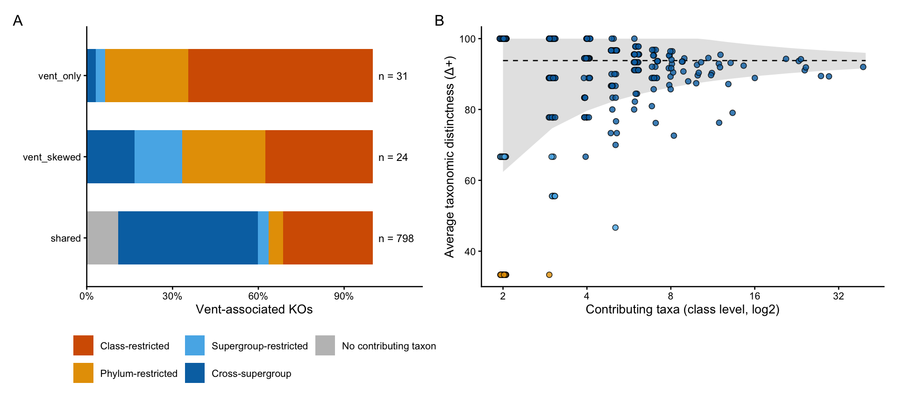
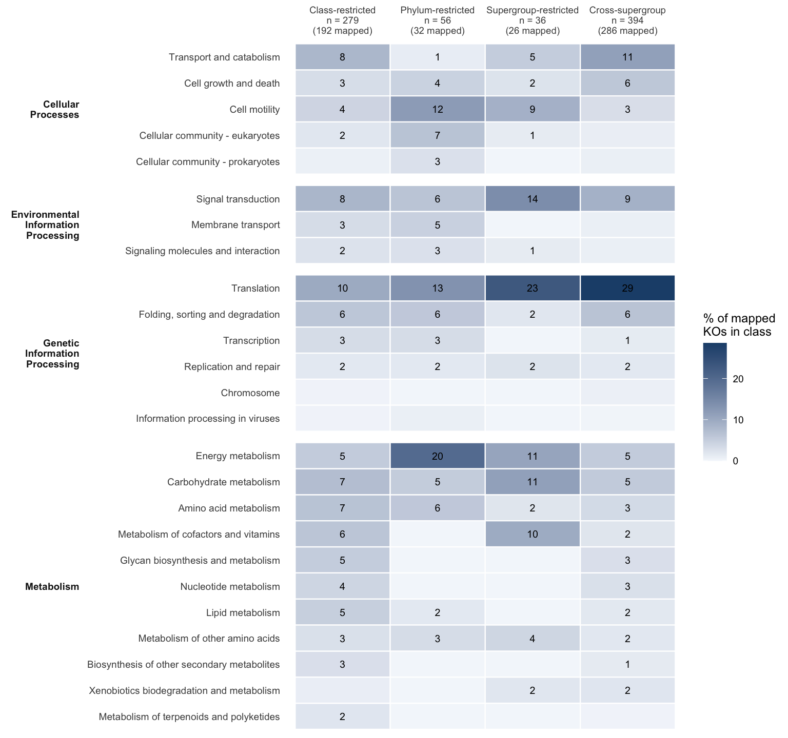
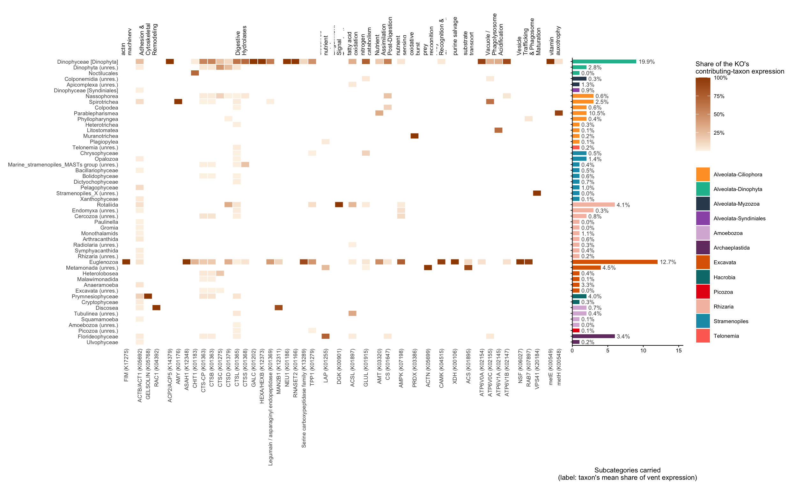
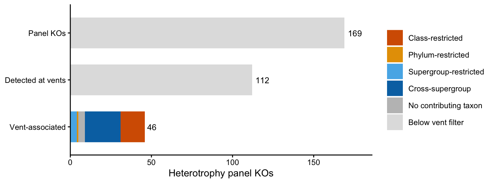

Code
source(if (file.exists("_setup.R")) "_setup.R" else "scripts/_setup.R")Frenemies euk metaT — curated grain 4, vent sample units
Hu Lab
October 23, 2026
For every vent-associated KO (detected in ≥ 30% of vent units, i.e. ≥ 4 of 13; the universe and habitat classes come from 05):
habitat_class from 05).span_rank). Average taxonomic distinctness (Δ+) tests whether the contributing taxa are more clustered than a random draw of the same size.Rules (config/params.yml, shared with 05, 05b and 07). Span rank and the taxon × KO contributing-taxon pairs are computed once, in 05b, and read here (2026-10-13); 06 adds field span, Δ+ and the heterotrophy view.
pair_min_units
vegan::taxondive): mean rank distance between contributing-taxon pairs over supergroup / phylum / class. Its expected value does not depend on the number of contributing taxa, only its SD does, so dplus_z = (Δ+ − E[Δ+]) / SD compares KOs with different contributing-taxon counts on one scale. The conservative rule above is applied here too: unresolved classes and unannotated phyla never count as shared.FIELDS_IN_SCOPE <- c("Gorda Ridge", "Von Damm", "Piccard")
CHOSEN_DEPTH <- 4
MIN_TPM <- params$detect_min_tpm
MIN_PER_MILLION <- params$detect_min_per_million
OCC_MIN <- params$occupancy_min_frac
PAIR_MIN_UNITS <- params$pair_min_units
N_PERM <- 9999
HABITAT_TABLE <- "output-tables/05_ko_habitat_class.csv" # from 05
TAXON_TABLE <- "output-tables/05_taxon_habitat.csv" # from 05
SPAN_TABLE <- "output-tables/05b_ko_span_by_habitat.csv" # from 05b (vent rows used)
PAIR_TABLE <- "output-tables/05b_carrier_pairs.csv.gz" # from 05b
SPAN_SENS_TABLE <- "output-tables/05b_span_sensitivity.csv" # from 05b
HET_REFERENCE <- "data/gene-lists/het_gene_reference.csv" # scripts/00_build_het_gene_reference.R
span_levels <- c("class", "phylum", "supergroup", "cross_supergroup", "no_carrier")
span_pal <- c(class = "#D55E00", phylum = "#E69F00", supergroup = "#56B4E9",
cross_supergroup = "#0072B2", no_carrier = "grey75",
below_filter = "grey88", not_detected = "grey97")
span_lab <- c(class = "Class-restricted", phylum = "Phylum-restricted",
supergroup = "Supergroup-restricted", cross_supergroup = "Cross-supergroup",
no_carrier = "No contributing taxon", below_filter = "Below vent filter",
not_detected = "Not detected at vents")
scale_span <- function(classes = span_levels, aesthetics = "fill", ...) {
scale_fill_manual(aesthetics = aesthetics, values = span_pal[classes], limits = classes,
labels = span_lab[classes], name = NULL, ...)
}[load_paired] data/processed/paired_L4.RData (built 2026-10-23 09:06; 318,911 rows)vent <- paired |> filter(vent_bin == "Vent")
units_vent <- vent |> distinct(unit = sample_unit, vent_bin, field)
stopifnot(nrow(units_vent) == 13)
ko_hab <- read_csv(HABITAT_TABLE, show_col_types = FALSE)
vent_kos <- ko_hab |>
filter(habitat_class %in% c("vent_only", "vent_skewed", "shared")) |>
pull(ko_id)
message(glue("{length(vent_kos)} vent-associated KOs (>= {OCC_MIN * 100}% of vent units)"))853 vent-associated KOs (>= 30% of vent units)ko_vent_unit <- unit_expression(vent, "ko_id", MIN_TPM, MIN_PER_MILLION)
ko_where <- field_span(ko_vent_unit |> filter(ko_id %in% vent_kos), units_vent, "ko_id") |>
left_join(ko_hab |> select(ko_id, habitat_class, occ_vent, occ_nonvent,
mean_share_vent, mean_share_nonvent), by = "ko_id")
# 06 recomputes vent detection on its own; it must agree with 05
stopifnot(all(ko_where$n_vent_units == round(ko_where$occ_vent * 13)))
ko_where |> count(habitat_class, field_span) |>
pivot_wider(names_from = field_span, values_from = n, names_prefix = "fields_", values_fill = 0)Span rank and contributing taxa come from 05b’s vent rows, so the pipeline computes them once. In 05b a taxon × KO pair is detected in a unit against the whole unit’s retained expression (the same denominator as the KO itself), and a contributing taxon is a pair detected in ≥ pair_min_units vent units.
SKH: reads 05b instead of recomputing carriers and span (2026-10-13). Re-render 05b first.
span_vent <- read_csv(SPAN_TABLE, show_col_types = FALSE) |>
filter(habitat == "vent")
stopifnot(setequal(span_vent$ko_id, vent_kos), !anyDuplicated(span_vent$ko_id),
all(span_vent$pair_min_units == PAIR_MIN_UNITS))
# carrier pairs: vent-associated KOs, taxon x KO detected in >= PAIR_MIN_UNITS vent units
carriers <- read_csv(PAIR_TABLE, show_col_types = FALSE) |>
filter(ko_id %in% vent_kos, n_det_vent >= PAIR_MIN_UNITS) |>
transmute(cur_supergroup, cur_phylum, cur_L4, resolved_L4, ko_id,
pair_units = n_det_vent, pair_tpm = tpm_vent)
# the pair table must reproduce 05b's carrier count for every KO
carrier_check <- carriers |>
count(ko_id, name = "n_carriers_pairs") |>
full_join(select(span_vent, ko_id, n_L4), by = "ko_id") |>
mutate(n_carriers_pairs = replace_na(n_carriers_pairs, 0L))
stopifnot(all(carrier_check$n_carriers_pairs == carrier_check$n_L4))
# distinct full lineages per KO (reported, not interpreted: counts resolution differences).
# unit_expression() runs on the full vent table so unit totals include every row.
lineage_key <- vent |>
distinct(full_classification, SUPERGROUP_0, SUPERGROUP_PHYLUM) |>
mutate(cur_full = curated_lineage(full_classification, SUPERGROUP_0, SUPERGROUP_PHYLUM, 99))
n_lineages <- vent |>
left_join(lineage_key, by = c("full_classification", "SUPERGROUP_0", "SUPERGROUP_PHYLUM")) |>
unit_expression(c("cur_full", "ko_id"), MIN_TPM, MIN_PER_MILLION) |>
filter(ko_id %in% vent_kos) |>
summarise(pair_units = sum(detected), .by = c(cur_full, ko_id)) |>
filter(pair_units >= PAIR_MIN_UNITS) |>
count(ko_id, name = "n_lineages")
ko_span <- ko_where |>
left_join(span_vent |>
select(ko_id, n_L2, n_L3, n_L4, top_carrier_L4, top_carrier, top_carrier_share,
dom_L2, dom_L3, dom_L4, span_rank),
by = "ko_id") |>
left_join(distinctness(carriers), by = "ko_id") |>
left_join(n_lineages, by = "ko_id") |>
mutate(n_lineages = replace_na(n_lineages, 0L),
span_rank = factor(span_rank, levels = span_levels),
dplus_class = case_when(n_L4 == 0 ~ "no_carrier",
n_L4 == 1 ~ "single_carrier",
dplus_z <= -2 ~ "clustered",
dplus_z >= 2 ~ "spread",
TRUE ~ "as_random"))
ko_span |> count(span_rank) |> mutate(frac = round(n / sum(n), 3))For results: the share of vent-associated KOs at each span rank, and how many contributing-taxon sets are more clustered than chance (
dplus_class == "clustered").
Computed in 05b for both habitats; vent rows shown here.
For results: do the span-rank fractions hold when a contributing taxon needs 1, 2 or 3 vent units?
Panel A: span rank of every vent-associated KO, split by 05 habitat class. Panel B: Δ+ of each KO’s contributing-taxon set against its number of contributing taxa; the dashed line is the expectation for random contributing-taxon sets drawn from the vent pool, the band ± 2 SD (the “funnel”). Points below the band have contributing taxa more taxonomically clustered than chance.
panel_span <- ko_span |>
count(habitat_class, span_rank) |>
mutate(habitat_class = factor(habitat_class, levels = c("vent_only", "vent_skewed", "shared")),
frac = n / sum(n), .by = habitat_class) |>
ggplot(aes(x = frac, y = fct_rev(habitat_class), fill = span_rank)) +
geom_col(width = 0.65) +
geom_text(data = \(d) summarise(d, n = sum(n), .by = habitat_class),
aes(x = 1.02, y = fct_rev(habitat_class), label = glue("n = {n}")),
inherit.aes = FALSE, hjust = 0, size = 3) +
scale_span() +
scale_x_continuous(labels = scales::percent, expand = expansion(mult = c(0, 0.15))) +
labs(x = "Vent-associated KOs", y = NULL) +
theme_classic(base_size = 10) +
theme(legend.position = "bottom") +
guides(fill = guide_legend(nrow = 2))
funnel <- ko_span |> filter(!is.na(dplus)) |> distinct(n_carriers, edplus, sd_dplus)
panel_funnel <- ggplot(filter(ko_span, !is.na(dplus)), aes(n_carriers, dplus)) +
geom_ribbon(data = funnel, aes(x = n_carriers, ymin = edplus - 2 * sd_dplus,
ymax = pmin(edplus + 2 * sd_dplus, 100)),
inherit.aes = FALSE, fill = "grey90") +
geom_line(data = funnel, aes(n_carriers, edplus), inherit.aes = FALSE, linetype = 2) +
geom_point(aes(fill = span_rank), shape = 21, size = 1.8, alpha = 0.8,
position = position_jitter(width = 0.04, height = 0, seed = 1)) +
scale_span(guide = "none") +
scale_x_continuous(trans = "log2") +
labs(x = "Contributing taxa (class level, log2)", y = "Average taxonomic distinctness (Δ+)") +
theme_classic(base_size = 10)
fig_span <- (panel_span | panel_funnel) + plot_layout(widths = c(1, 1.2)) +
plot_annotation(tag_levels = "A")
fig_span
# ggsave("figures/06-span.svg", fig_span, width = 10, height = 4.5)
Do narrower contributing-taxon sets go with narrower geography? Both axes rise with how strongly a KO is expressed (a KO with more expression clears detection in more units and in more taxa), so the association is tested with expression held constant: span-rank labels are permuted within tertiles of mean vent share, and the table’s chi-square statistic is compared with its permutation distribution.
strat_chisq <- function(x, y, strata, n_perm = N_PERM) {
stat <- \(yy) suppressWarnings(unname(chisq.test(table(x, yy))$statistic))
shuffle <- function() {
yy <- y
for (s in unique(strata)) {
i <- which(strata == s)
yy[i] <- y[i][sample.int(length(i))]
}
yy
}
obs <- stat(y)
null <- replicate(n_perm, stat(shuffle()))
tibble(chisq = obs, p_perm = (1 + sum(null >= obs)) / (1 + n_perm))
}
set.seed(params$seed)
ww <- ko_span |>
filter(span_rank != "no_carrier") |>
mutate(span_rank = droplevels(span_rank),
expr_tertile = ntile(mean_share_vent, 3),
vent_restricted = if_else(habitat_class == "shared", "shared", "vent_only/skewed"))
span_crosstab <- bind_rows(
ww |> count(axis = "field_span", level = as.character(field_span), span_rank),
ww |> count(axis = "habitat", level = vent_restricted, span_rank)) |>
mutate(frac = n / sum(n), .by = c(axis, level))
where_who_tests <- bind_rows(
strat_chisq(ww$field_span, ww$span_rank, ww$expr_tertile) |> mutate(axis = "field_span"),
strat_chisq(ww$vent_restricted, ww$span_rank, ww$expr_tertile) |> mutate(axis = "habitat"))
span_crosstab |> select(-n) |>
pivot_wider(names_from = span_rank, values_from = frac, values_fill = 0) |>
mutate(across(where(is.double), \(x) round(x, 3)))For results: whether span rank shifts with field span or with vent-only vs. shared, once expression level is held constant.
Each KO is placed in its KEGG BRITE level-B categories (read_brite_level_b(), the same map as 04 and 05). A KO in n categories counts 1/n in each. Composition is over mapped KOs; coverage differs by class, so it is printed and carried in the axis labels.
brite_map <- read_brite_level_b()
core_span <- c("class", "phylum", "supergroup", "cross_supergroup")
span_kegg_long <- ko_span |>
filter(span_rank %in% core_span) |>
transmute(ko_id, span_rank = as.character(span_rank)) |>
left_join(brite_map |> select(ko_id, a_description, description, n_cat),
by = "ko_id", relationship = "one-to-many")
span_coverage <- span_kegg_long |>
summarise(n_ko = n_distinct(ko_id), n_mapped = n_distinct(ko_id[!is.na(description)]),
.by = span_rank)
span_coveragespan_kegg <- span_kegg_long |>
filter(!is.na(description)) |>
summarise(ko_weight = sum(1 / n_cat), .by = c(span_rank, a_description, description)) |>
complete(span_rank, nesting(a_description, description), fill = list(ko_weight = 0)) |>
left_join(span_coverage, by = "span_rank") |>
mutate(pct_of_mapped = 100 * ko_weight / n_mapped)span_axis_lab <- span_coverage |>
mutate(lab = glue("{span_lab[span_rank]}\nn = {n_ko}\n({n_mapped} mapped)")) |>
select(span_rank, lab) |> deframe()
fig_span_kegg <- span_kegg |>
mutate(span_rank = factor(span_rank, levels = core_span),
description = fct_reorder(description, ko_weight, .fun = sum),
a_description = str_wrap(a_description, 14)) |>
ggplot(aes(span_rank, description, fill = pct_of_mapped)) +
geom_tile(colour = "white", linewidth = 0.4) +
geom_text(aes(label = if_else(pct_of_mapped >= 1, sprintf("%.0f", pct_of_mapped), "")),
size = 2.6) +
scale_fill_gradient(low = "#F4F7FB", high = "#1F4E79", name = "% of mapped\nKOs in class") +
scale_x_discrete(labels = span_axis_lab, position = "top") +
facet_grid(a_description ~ ., scales = "free_y", space = "free_y", switch = "y") +
labs(x = NULL, y = NULL) +
theme_minimal(base_size = 9) +
theme(panel.grid = element_blank(), strip.placement = "outside",
strip.text.y.left = element_text(angle = 0, face = "bold", hjust = 1),
axis.text.x.top = element_text(size = 7))
fig_span_kegg
# ggsave("figures/06-span-kegg.svg", fig_span_kegg, width = 8, height = 7.5)
For results: which level-B categories set class- and phylum-restricted KOs apart from cross-supergroup KOs (read with mapped coverage).
The panel is compiled once by scripts/00_build_het_gene_reference.R and read here and in 07. Rows there are KO × source × pathway; here they are kept long for subcategory membership (a KO in two subcategories counts in both) and collapsed to one row per KO for the KO table.
het_long <- read_csv(HET_REFERENCE, show_col_types = FALSE) |>
filter(!is.na(subcategory)) |>
distinct(ko_id, category, subcategory, gene)
het_ko <- het_long |>
summarise(across(c(category, subcategory, gene),
\(x) paste(sort(unique(x)), collapse = " | ")), .by = ko_id)
detected_at_vents <- ko_vent_unit |> filter(detected) |> distinct(ko_id) |> pull()
het_span <- het_ko |>
left_join(ko_span, by = "ko_id") |>
mutate(status = case_when(ko_id %in% vent_kos ~ as.character(span_rank),
ko_id %in% detected_at_vents ~ "below_filter",
TRUE ~ "not_detected"),
status = factor(status, levels = c(span_levels, "below_filter", "not_detected")))
het_span |> count(status)Each cell is a contributing taxon’s share of that KO’s contributing-taxon expression at vents. Columns are vent-associated panel KOs grouped by subcategory; rows are contributing taxa grouped by curated group. The bar panel counts the subcategories each taxon carries (module completeness); its label is the taxon’s own mean share of vent expression, because a taxon with little expression has less chance of clearing detection for any KO.
taxon_vent_share <- read_csv(TAXON_TABLE, show_col_types = FALSE) |>
select(cur_L4, cur_group, mean_share_vent)
het_carriers <- carriers |>
filter(ko_id %in% het_ko$ko_id) |>
mutate(share_of_ko = pair_tpm / sum(pair_tpm), .by = ko_id) |>
left_join(taxon_vent_share, by = "cur_L4") |>
mutate(taxon = taxon_label_unique(cur_L4))
het_taxon_ko <- het_carriers |>
inner_join(het_long, by = "ko_id", relationship = "many-to-many") |>
select(cur_group, cur_L4, taxon, mean_share_vent, category, subcategory, ko_id, gene,
pair_units, pair_tpm, share_of_ko)
# module completeness: panel subcategories (with >= 1 vent-associated KO) each taxon carries
n_subcats_vent <- het_long |> filter(ko_id %in% vent_kos) |> distinct(subcategory) |> nrow()
module_completeness <- het_taxon_ko |>
summarise(n_subcategories = n_distinct(subcategory), n_het_kos = n_distinct(ko_id),
subcategories = paste(sort(unique(subcategory)), collapse = " | "),
.by = c(cur_group, cur_L4, taxon, mean_share_vent)) |>
mutate(frac_subcategories = n_subcategories / n_subcats_vent) |>
arrange(desc(n_subcategories))
module_completeness |> select(-cur_L4) |> head(15)$estimate
rho
0.6351662
$p.value
[1] 7.242617e-07For results: which taxa co-express the most heterotrophy subcategories, read against their expression share; high completeness with a modest share is the stronger case.
taxon_order <- module_completeness |>
mutate(cur_group = factor(cur_group, levels = SUPERGROUP_0_ordering)) |>
arrange(cur_group, desc(n_subcategories)) |>
pull(taxon)
heat_df <- het_taxon_ko |>
mutate(taxon = factor(taxon, levels = rev(taxon_order)),
gene_short = str_remove(gene, " \\(.*$"),
ko_lab = glue("{gene_short} ({ko_id})"),
subcategory = str_wrap(subcategory, 14))
panel_heat <- ggplot(heat_df, aes(ko_lab, taxon, fill = share_of_ko)) +
geom_tile(colour = "white", linewidth = 0.3) +
scale_fill_gradient(low = "#FDF3E7", high = "#A04A00", labels = scales::percent,
name = "Share of the KO's\ncontributing-taxon expression") +
facet_grid(. ~ subcategory, scales = "free_x", space = "free_x") +
labs(x = NULL, y = NULL) +
theme_minimal(base_size = 8) +
theme(panel.grid = element_blank(),
axis.text.x = element_text(angle = 90, hjust = 1, vjust = 0.5),
strip.text.x = element_text(angle = 90, hjust = 0, size = 7))
panel_complete <- module_completeness |>
mutate(taxon = factor(taxon, levels = rev(taxon_order))) |>
ggplot(aes(n_subcategories, taxon, fill = cur_group)) +
geom_col(width = 0.7) +
geom_text(aes(label = scales::percent(mean_share_vent, accuracy = 0.1)),
hjust = -0.15, size = 2.4, colour = "grey30") +
scale_fill_manual(values = tax_color_metaT, name = NULL) +
scale_x_continuous(expand = expansion(mult = c(0, 0.3))) +
labs(x = "Subcategories carried\n(label: taxon's mean share of vent expression)", y = NULL) +
theme_classic(base_size = 8) +
theme(axis.text.y = element_blank())
fig_het_taxa <- (panel_heat | panel_complete) + plot_layout(widths = c(4, 1), guides = "collect")
fig_het_taxa
# ggsave("figures/06-het-taxa.svg", fig_het_taxa, width = 13, height = 8)
funnel_df <- bind_rows(
het_span |> mutate(stage = "Panel KOs"),
het_span |> filter(status != "not_detected") |> mutate(stage = "Detected at vents"),
het_span |> filter(ko_id %in% vent_kos) |> mutate(stage = "Vent-associated")) |>
mutate(fill = if_else(stage == "Vent-associated", as.character(status), "below_filter"),
stage = factor(stage, levels = rev(c("Panel KOs", "Detected at vents", "Vent-associated")))) |>
count(stage, fill)
fig_het_funnel <- ggplot(funnel_df, aes(n, stage, fill = fill)) +
geom_col(width = 0.65) +
geom_text(data = \(d) summarise(d, n = sum(n), .by = stage), aes(n, stage, label = n),
inherit.aes = FALSE, hjust = -0.25, size = 3) +
scale_span(classes = c(span_levels, "below_filter")) +
scale_x_continuous(expand = expansion(mult = c(0, 0.1))) +
labs(x = "Heterotrophy panel KOs", y = NULL) +
theme_classic(base_size = 10)
fig_het_funnel
write_csv(ko_span, "output-tables/06_ko_span.csv") # read by 07
write_csv(span_crosstab, "output-tables/06_span_crosstab.csv")
write_csv(where_who_tests, "output-tables/06_where_who_tests.csv")
write_csv(span_kegg, "output-tables/06_span_kegg_composition.csv")
write_csv(het_span, "output-tables/06_heterotrophy_span.csv")
write_csv(het_taxon_ko, "output-tables/06_het_taxon_ko.csv")
write_csv(module_completeness, "output-tables/06_het_module_completeness.csv")stopifnot(
all(unique(vent$field) %in% FIELDS_IN_SCOPE),
!any(grepl("Opisthokonta", vent$full_classification)),
!anyDuplicated(ko_span$ko_id), setequal(ko_span$ko_id, vent_kos),
!anyNA(ko_span$span_rank),
all(ko_span$n_L2 <= ko_span$n_L3 & ko_span$n_L3 <= ko_span$n_L4), # nested ranks
all(ko_span$span_rank[ko_span$n_L2 > 1] == "cross_supergroup"),
all(is.na(ko_span$dplus) | ko_span$n_L4 >= 2),
all(ko_span$field_span >= 1 & ko_span$field_span <= 3),
all(abs(summarise(span_kegg, s = sum(pct_of_mapped), .by = span_rank)$s - 100) < 1e-6),
!anyDuplicated(het_span$ko_id), !anyNA(het_span$status),
all(abs(summarise(het_carriers, s = sum(share_of_ko), .by = ko_id)$s - 1) < 1e-8)
)R version 4.6.0 (2026-04-24)
Platform: aarch64-apple-darwin23
Running under: macOS Sequoia 15.8.1
Matrix products: default
BLAS: /Library/Frameworks/R.framework/Versions/4.6/Resources/lib/libRblas.0.dylib
LAPACK: /Library/Frameworks/R.framework/Versions/4.6/Resources/lib/libRlapack.dylib; LAPACK version 3.12.1
locale:
[1] en_US.UTF-8/en_US.UTF-8/en_US.UTF-8/C/en_US.UTF-8/en_US.UTF-8
time zone: America/Chicago
tzcode source: internal
attached base packages:
[1] stats graphics grDevices utils datasets methods base
other attached packages:
[1] patchwork_1.3.2 glue_1.8.1 vegan_2.7-6 permute_0.9-10
[5] lubridate_1.9.5 forcats_1.0.1 stringr_1.6.0 dplyr_1.2.1
[9] purrr_1.2.2 readr_2.2.0 tidyr_1.3.2 tibble_3.3.1
[13] ggplot2_4.0.3 tidyverse_2.0.0
loaded via a namespace (and not attached):
[1] generics_0.1.4 stringi_1.8.9 lattice_0.23-1 hms_1.1.4
[5] digest_0.6.39 magrittr_2.0.5 evaluate_1.0.5 grid_4.6.0
[9] timechange_0.4.0 RColorBrewer_1.1-3 fastmap_1.2.0 jsonlite_2.0.0
[13] Matrix_1.7-6 mgcv_1.9-4 scales_1.4.0 cli_3.6.6
[17] crayon_1.5.3 rlang_1.3.0 bit64_4.8.6 splines_4.6.0
[21] withr_3.0.3 yaml_2.3.12 otel_0.2.0 tools_4.6.0
[25] parallel_4.6.0 tzdb_0.5.0 vctrs_0.7.3 R6_2.6.1
[29] lifecycle_1.0.5 bit_4.6.0 htmlwidgets_1.6.4 vroom_1.7.1
[33] MASS_7.3-66 cluster_2.1.8.3 pkgconfig_2.0.3 pillar_1.11.1
[37] gtable_0.3.6 xfun_0.60 tidyselect_1.2.1 rstudioapi_0.19.0
[41] knitr_1.51 farver_2.1.2 htmltools_0.5.9 nlme_3.1-171
[45] labeling_0.4.3 rmarkdown_2.32 compiler_4.6.0 S7_0.2.2 ---
title: "06 — Where and among which taxa vent functions are expressed"
subtitle: "Frenemies euk metaT — curated grain 4, vent sample units"
author: "Hu Lab"
date: last-modified
format:
html:
toc: true
toc-depth: 2
code-fold: show
df-print: paged
---
# Questions
For every **vent-associated KO** (detected in ≥ 30% of vent units, i.e. ≥ 4 of 13; the
universe and habitat classes come from 05):
* **A. Where is it expressed?** Vent units, vent fields, and whether it is also in
background seawater (`habitat_class` from 05).
* **B. Among which taxa?** The class-level (grain 4) taxa that carry it, counted at each
rank of the curated taxonomy, and the deepest rank all contributing taxa share (`span_rank`).
Average taxonomic distinctness (Δ+) tests whether the contributing taxa are more clustered than
a random draw of the same size.
* **C. Where × who.** Are field-restricted or vent-only functions carried by narrower
lineages?
* **D. KEGG level-B composition** of each span class: the blind, trend-reporting view.
* **E. Heterotrophy panel**: the question-driven view. Which taxa carry each panel KO, and
which taxa co-express the most heterotrophy subcategories.
**Rules** (`config/params.yml`, shared with 05, 05b and 07). Span rank and the taxon × KO
contributing-taxon pairs are computed once, in 05b, and read here (2026-10-13); 06 adds field span, Δ+
and the heterotrophy view.
* *Detected* in a unit: ≥ 1 scaledTPM and ≥ 10 per million of the unit's retained
expression.
* *Contributing taxon*: a class-level taxon whose taxon × KO pair is detected in ≥ `pair_min_units`
(2) vent units. Presence/absence only; these are compositional data, so a contributing taxon is a
taxon whose share of that KO clears detection, not a count of cells.
* *Span rank* (lowest common ancestor of the contributing taxa, conservative): **class** = one
class-level taxon; **phylum** = one curated phylum; **supergroup** = one curated
supergroup; **cross-supergroup** otherwise. A contributing taxon not resolved at a rank (an
"(unres.)" class or an "-Unannotated" phylum) caps the span at the next coarser rank.
Syndiniales is a phylum-level group, separate from Dinophyta (02 curation).
* *Δ+* (Clarke & Warwick 1998, *J Appl Ecol* 35:523–531; `vegan::taxondive`): mean rank
distance between contributing-taxon pairs over supergroup / phylum / class. Its expected value
does not depend on the number of contributing taxa, only its SD does, so
`dplus_z = (Δ+ − E[Δ+]) / SD` compares KOs with different contributing-taxon counts on one scale.
The conservative rule above is applied here too: unresolved classes and unannotated
phyla never count as shared.
# Set up
```{r setup}
#| message: false
#| warning: false
source(if (file.exists("_setup.R")) "_setup.R" else "scripts/_setup.R")
```
```{r params}
FIELDS_IN_SCOPE <- c("Gorda Ridge", "Von Damm", "Piccard")
CHOSEN_DEPTH <- 4
MIN_TPM <- params$detect_min_tpm
MIN_PER_MILLION <- params$detect_min_per_million
OCC_MIN <- params$occupancy_min_frac
PAIR_MIN_UNITS <- params$pair_min_units
N_PERM <- 9999
HABITAT_TABLE <- "output-tables/05_ko_habitat_class.csv" # from 05
TAXON_TABLE <- "output-tables/05_taxon_habitat.csv" # from 05
SPAN_TABLE <- "output-tables/05b_ko_span_by_habitat.csv" # from 05b (vent rows used)
PAIR_TABLE <- "output-tables/05b_carrier_pairs.csv.gz" # from 05b
SPAN_SENS_TABLE <- "output-tables/05b_span_sensitivity.csv" # from 05b
HET_REFERENCE <- "data/gene-lists/het_gene_reference.csv" # scripts/00_build_het_gene_reference.R
span_levels <- c("class", "phylum", "supergroup", "cross_supergroup", "no_carrier")
span_pal <- c(class = "#D55E00", phylum = "#E69F00", supergroup = "#56B4E9",
cross_supergroup = "#0072B2", no_carrier = "grey75",
below_filter = "grey88", not_detected = "grey97")
span_lab <- c(class = "Class-restricted", phylum = "Phylum-restricted",
supergroup = "Supergroup-restricted", cross_supergroup = "Cross-supergroup",
no_carrier = "No contributing taxon", below_filter = "Below vent filter",
not_detected = "Not detected at vents")
scale_span <- function(classes = span_levels, aesthetics = "fill", ...) {
scale_fill_manual(aesthetics = aesthetics, values = span_pal[classes], limits = classes,
labels = span_lab[classes], name = NULL, ...)
}
```
```{r prep}
#| message: true
# built once at the end of 02 (R/load_paired.R)
paired <- load_paired(fields = FIELDS_IN_SCOPE, depth = CHOSEN_DEPTH)
vent <- paired |> filter(vent_bin == "Vent")
units_vent <- vent |> distinct(unit = sample_unit, vent_bin, field)
stopifnot(nrow(units_vent) == 13)
ko_hab <- read_csv(HABITAT_TABLE, show_col_types = FALSE)
vent_kos <- ko_hab |>
filter(habitat_class %in% c("vent_only", "vent_skewed", "shared")) |>
pull(ko_id)
message(glue("{length(vent_kos)} vent-associated KOs (>= {OCC_MIN * 100}% of vent units)"))
```
# A. Where is each KO expressed?
```{r where}
#| message: true
ko_vent_unit <- unit_expression(vent, "ko_id", MIN_TPM, MIN_PER_MILLION)
ko_where <- field_span(ko_vent_unit |> filter(ko_id %in% vent_kos), units_vent, "ko_id") |>
left_join(ko_hab |> select(ko_id, habitat_class, occ_vent, occ_nonvent,
mean_share_vent, mean_share_nonvent), by = "ko_id")
# 06 recomputes vent detection on its own; it must agree with 05
stopifnot(all(ko_where$n_vent_units == round(ko_where$occ_vent * 13)))
ko_where |> count(habitat_class, field_span) |>
pivot_wider(names_from = field_span, values_from = n, names_prefix = "fields_", values_fill = 0)
```
# B. Among which taxa?
Span rank and contributing taxa come from 05b's vent rows, so the pipeline computes them once. In 05b
a taxon × KO pair is detected in a unit against the **whole unit's** retained expression (the
same denominator as the KO itself), and a contributing taxon is a pair detected in ≥ `pair_min_units`
vent units.
>SKH: reads 05b instead of recomputing carriers and span (2026-10-13). Re-render 05b first.
```{r carriers}
#| message: true
span_vent <- read_csv(SPAN_TABLE, show_col_types = FALSE) |>
filter(habitat == "vent")
stopifnot(setequal(span_vent$ko_id, vent_kos), !anyDuplicated(span_vent$ko_id),
all(span_vent$pair_min_units == PAIR_MIN_UNITS))
# carrier pairs: vent-associated KOs, taxon x KO detected in >= PAIR_MIN_UNITS vent units
carriers <- read_csv(PAIR_TABLE, show_col_types = FALSE) |>
filter(ko_id %in% vent_kos, n_det_vent >= PAIR_MIN_UNITS) |>
transmute(cur_supergroup, cur_phylum, cur_L4, resolved_L4, ko_id,
pair_units = n_det_vent, pair_tpm = tpm_vent)
# the pair table must reproduce 05b's carrier count for every KO
carrier_check <- carriers |>
count(ko_id, name = "n_carriers_pairs") |>
full_join(select(span_vent, ko_id, n_L4), by = "ko_id") |>
mutate(n_carriers_pairs = replace_na(n_carriers_pairs, 0L))
stopifnot(all(carrier_check$n_carriers_pairs == carrier_check$n_L4))
# distinct full lineages per KO (reported, not interpreted: counts resolution differences).
# unit_expression() runs on the full vent table so unit totals include every row.
lineage_key <- vent |>
distinct(full_classification, SUPERGROUP_0, SUPERGROUP_PHYLUM) |>
mutate(cur_full = curated_lineage(full_classification, SUPERGROUP_0, SUPERGROUP_PHYLUM, 99))
n_lineages <- vent |>
left_join(lineage_key, by = c("full_classification", "SUPERGROUP_0", "SUPERGROUP_PHYLUM")) |>
unit_expression(c("cur_full", "ko_id"), MIN_TPM, MIN_PER_MILLION) |>
filter(ko_id %in% vent_kos) |>
summarise(pair_units = sum(detected), .by = c(cur_full, ko_id)) |>
filter(pair_units >= PAIR_MIN_UNITS) |>
count(ko_id, name = "n_lineages")
ko_span <- ko_where |>
left_join(span_vent |>
select(ko_id, n_L2, n_L3, n_L4, top_carrier_L4, top_carrier, top_carrier_share,
dom_L2, dom_L3, dom_L4, span_rank),
by = "ko_id") |>
left_join(distinctness(carriers), by = "ko_id") |>
left_join(n_lineages, by = "ko_id") |>
mutate(n_lineages = replace_na(n_lineages, 0L),
span_rank = factor(span_rank, levels = span_levels),
dplus_class = case_when(n_L4 == 0 ~ "no_carrier",
n_L4 == 1 ~ "single_carrier",
dplus_z <= -2 ~ "clustered",
dplus_z >= 2 ~ "spread",
TRUE ~ "as_random"))
ko_span |> count(span_rank) |> mutate(frac = round(n / sum(n), 3))
ko_span |> count(span_rank, dplus_class) |>
pivot_wider(names_from = dplus_class, values_from = n, values_fill = 0)
ko_span |>
summarise(n = n(), median_n_L4 = median(n_L4), median_n_lineages = median(n_lineages),
median_dom_L4 = median(dom_L4, na.rm = TRUE), .by = span_rank) |>
arrange(span_rank)
```
> For results: the share of vent-associated KOs at each span rank, and how many contributing-taxon sets are more clustered than chance (`dplus_class == "clustered"`).
## Sensitivity to the contributing-taxon rule
Computed in 05b for both habitats; vent rows shown here.
```{r span-sensitivity}
read_csv(SPAN_SENS_TABLE, show_col_types = FALSE) |>
filter(habitat == "vent")
```
> For results: do the span-rank fractions hold when a contributing taxon needs 1, 2 or 3 vent units?
## Figure: span rank and Δ+
Panel A: span rank of every vent-associated KO, split by 05 habitat class. Panel B: Δ+
of each KO's contributing-taxon set against its number of contributing taxa; the dashed line is the
expectation for random contributing-taxon sets drawn from the vent pool, the band ± 2 SD (the
"funnel"). Points below the band have contributing taxa more taxonomically clustered than chance.
```{r fig-span}
#| fig-width: 10
#| fig-height: 4.5
panel_span <- ko_span |>
count(habitat_class, span_rank) |>
mutate(habitat_class = factor(habitat_class, levels = c("vent_only", "vent_skewed", "shared")),
frac = n / sum(n), .by = habitat_class) |>
ggplot(aes(x = frac, y = fct_rev(habitat_class), fill = span_rank)) +
geom_col(width = 0.65) +
geom_text(data = \(d) summarise(d, n = sum(n), .by = habitat_class),
aes(x = 1.02, y = fct_rev(habitat_class), label = glue("n = {n}")),
inherit.aes = FALSE, hjust = 0, size = 3) +
scale_span() +
scale_x_continuous(labels = scales::percent, expand = expansion(mult = c(0, 0.15))) +
labs(x = "Vent-associated KOs", y = NULL) +
theme_classic(base_size = 10) +
theme(legend.position = "bottom") +
guides(fill = guide_legend(nrow = 2))
funnel <- ko_span |> filter(!is.na(dplus)) |> distinct(n_carriers, edplus, sd_dplus)
panel_funnel <- ggplot(filter(ko_span, !is.na(dplus)), aes(n_carriers, dplus)) +
geom_ribbon(data = funnel, aes(x = n_carriers, ymin = edplus - 2 * sd_dplus,
ymax = pmin(edplus + 2 * sd_dplus, 100)),
inherit.aes = FALSE, fill = "grey90") +
geom_line(data = funnel, aes(n_carriers, edplus), inherit.aes = FALSE, linetype = 2) +
geom_point(aes(fill = span_rank), shape = 21, size = 1.8, alpha = 0.8,
position = position_jitter(width = 0.04, height = 0, seed = 1)) +
scale_span(guide = "none") +
scale_x_continuous(trans = "log2") +
labs(x = "Contributing taxa (class level, log2)", y = "Average taxonomic distinctness (Δ+)") +
theme_classic(base_size = 10)
fig_span <- (panel_span | panel_funnel) + plot_layout(widths = c(1, 1.2)) +
plot_annotation(tag_levels = "A")
fig_span
# ggsave("figures/06-span.svg", fig_span, width = 10, height = 4.5)
```
# C. Where × who
Do narrower contributing-taxon sets go with narrower geography? Both axes rise with how strongly a
KO is expressed (a KO with more expression clears detection in more units **and** in more
taxa), so the association is tested with expression held constant: span-rank labels are
permuted within tertiles of mean vent share, and the table's chi-square statistic is
compared with its permutation distribution.
```{r where-who}
#| message: true
strat_chisq <- function(x, y, strata, n_perm = N_PERM) {
stat <- \(yy) suppressWarnings(unname(chisq.test(table(x, yy))$statistic))
shuffle <- function() {
yy <- y
for (s in unique(strata)) {
i <- which(strata == s)
yy[i] <- y[i][sample.int(length(i))]
}
yy
}
obs <- stat(y)
null <- replicate(n_perm, stat(shuffle()))
tibble(chisq = obs, p_perm = (1 + sum(null >= obs)) / (1 + n_perm))
}
set.seed(params$seed)
ww <- ko_span |>
filter(span_rank != "no_carrier") |>
mutate(span_rank = droplevels(span_rank),
expr_tertile = ntile(mean_share_vent, 3),
vent_restricted = if_else(habitat_class == "shared", "shared", "vent_only/skewed"))
span_crosstab <- bind_rows(
ww |> count(axis = "field_span", level = as.character(field_span), span_rank),
ww |> count(axis = "habitat", level = vent_restricted, span_rank)) |>
mutate(frac = n / sum(n), .by = c(axis, level))
where_who_tests <- bind_rows(
strat_chisq(ww$field_span, ww$span_rank, ww$expr_tertile) |> mutate(axis = "field_span"),
strat_chisq(ww$vent_restricted, ww$span_rank, ww$expr_tertile) |> mutate(axis = "habitat"))
span_crosstab |> select(-n) |>
pivot_wider(names_from = span_rank, values_from = frac, values_fill = 0) |>
mutate(across(where(is.double), \(x) round(x, 3)))
where_who_tests
```
> For results: whether span rank shifts with field span or with vent-only vs. shared, once expression level is held constant.
# D. KEGG level-B composition of each span class
Each KO is placed in its KEGG BRITE level-B categories (`read_brite_level_b()`, the same
map as 04 and 05). A KO in *n* categories counts 1/*n* in each. Composition is over mapped
KOs; coverage differs by class, so it is printed and carried in the axis labels.
```{r span-kegg}
brite_map <- read_brite_level_b()
core_span <- c("class", "phylum", "supergroup", "cross_supergroup")
span_kegg_long <- ko_span |>
filter(span_rank %in% core_span) |>
transmute(ko_id, span_rank = as.character(span_rank)) |>
left_join(brite_map |> select(ko_id, a_description, description, n_cat),
by = "ko_id", relationship = "one-to-many")
span_coverage <- span_kegg_long |>
summarise(n_ko = n_distinct(ko_id), n_mapped = n_distinct(ko_id[!is.na(description)]),
.by = span_rank)
span_coverage
span_kegg <- span_kegg_long |>
filter(!is.na(description)) |>
summarise(ko_weight = sum(1 / n_cat), .by = c(span_rank, a_description, description)) |>
complete(span_rank, nesting(a_description, description), fill = list(ko_weight = 0)) |>
left_join(span_coverage, by = "span_rank") |>
mutate(pct_of_mapped = 100 * ko_weight / n_mapped)
```
```{r fig-span-kegg}
#| fig-width: 8
#| fig-height: 7.5
span_axis_lab <- span_coverage |>
mutate(lab = glue("{span_lab[span_rank]}\nn = {n_ko}\n({n_mapped} mapped)")) |>
select(span_rank, lab) |> deframe()
fig_span_kegg <- span_kegg |>
mutate(span_rank = factor(span_rank, levels = core_span),
description = fct_reorder(description, ko_weight, .fun = sum),
a_description = str_wrap(a_description, 14)) |>
ggplot(aes(span_rank, description, fill = pct_of_mapped)) +
geom_tile(colour = "white", linewidth = 0.4) +
geom_text(aes(label = if_else(pct_of_mapped >= 1, sprintf("%.0f", pct_of_mapped), "")),
size = 2.6) +
scale_fill_gradient(low = "#F4F7FB", high = "#1F4E79", name = "% of mapped\nKOs in class") +
scale_x_discrete(labels = span_axis_lab, position = "top") +
facet_grid(a_description ~ ., scales = "free_y", space = "free_y", switch = "y") +
labs(x = NULL, y = NULL) +
theme_minimal(base_size = 9) +
theme(panel.grid = element_blank(), strip.placement = "outside",
strip.text.y.left = element_text(angle = 0, face = "bold", hjust = 1),
axis.text.x.top = element_text(size = 7))
fig_span_kegg
# ggsave("figures/06-span-kegg.svg", fig_span_kegg, width = 8, height = 7.5)
```
> For results: which level-B categories set class- and phylum-restricted KOs apart from cross-supergroup KOs (read with mapped coverage).
# E. Heterotrophy panel
The panel is compiled once by `scripts/00_build_het_gene_reference.R` and read here and
in 07. Rows there are KO × source × pathway; here they are kept long for subcategory
membership (a KO in two subcategories counts in both) and collapsed to one row per KO for
the KO table.
```{r het-panel}
#| message: true
het_long <- read_csv(HET_REFERENCE, show_col_types = FALSE) |>
filter(!is.na(subcategory)) |>
distinct(ko_id, category, subcategory, gene)
het_ko <- het_long |>
summarise(across(c(category, subcategory, gene),
\(x) paste(sort(unique(x)), collapse = " | ")), .by = ko_id)
detected_at_vents <- ko_vent_unit |> filter(detected) |> distinct(ko_id) |> pull()
het_span <- het_ko |>
left_join(ko_span, by = "ko_id") |>
mutate(status = case_when(ko_id %in% vent_kos ~ as.character(span_rank),
ko_id %in% detected_at_vents ~ "below_filter",
TRUE ~ "not_detected"),
status = factor(status, levels = c(span_levels, "below_filter", "not_detected")))
het_span |> count(status)
het_span |> filter(ko_id %in% vent_kos) |>
select(ko_id, gene, subcategory, habitat_class, field_span, span_rank, n_L4,
dplus_z, top_carrier, top_carrier_share) |>
arrange(span_rank, desc(n_L4))
```
## Which taxa carry each panel KO
Each cell is a contributing taxon's share of that KO's contributing-taxon expression at vents. Columns
are vent-associated panel KOs grouped by subcategory; rows are contributing taxa grouped by
curated group. The bar panel counts the subcategories each taxon carries (module
completeness); its label is the taxon's own mean share of vent expression, because a
taxon with little expression has less chance of clearing detection for any KO.
```{r het-taxa}
#| message: true
taxon_vent_share <- read_csv(TAXON_TABLE, show_col_types = FALSE) |>
select(cur_L4, cur_group, mean_share_vent)
het_carriers <- carriers |>
filter(ko_id %in% het_ko$ko_id) |>
mutate(share_of_ko = pair_tpm / sum(pair_tpm), .by = ko_id) |>
left_join(taxon_vent_share, by = "cur_L4") |>
mutate(taxon = taxon_label_unique(cur_L4))
het_taxon_ko <- het_carriers |>
inner_join(het_long, by = "ko_id", relationship = "many-to-many") |>
select(cur_group, cur_L4, taxon, mean_share_vent, category, subcategory, ko_id, gene,
pair_units, pair_tpm, share_of_ko)
# module completeness: panel subcategories (with >= 1 vent-associated KO) each taxon carries
n_subcats_vent <- het_long |> filter(ko_id %in% vent_kos) |> distinct(subcategory) |> nrow()
module_completeness <- het_taxon_ko |>
summarise(n_subcategories = n_distinct(subcategory), n_het_kos = n_distinct(ko_id),
subcategories = paste(sort(unique(subcategory)), collapse = " | "),
.by = c(cur_group, cur_L4, taxon, mean_share_vent)) |>
mutate(frac_subcategories = n_subcategories / n_subcats_vent) |>
arrange(desc(n_subcategories))
module_completeness |> select(-cur_L4) |> head(15)
# does completeness simply follow a taxon's expression share? (detection confound)
completeness_vs_share <- cor.test(module_completeness$n_subcategories,
module_completeness$mean_share_vent,
method = "spearman", exact = FALSE)
completeness_vs_share[c("estimate", "p.value")]
```
> For results: which taxa co-express the most heterotrophy subcategories, read against their expression share; high completeness with a modest share is the stronger case.
```{r fig-het-taxa}
#| fig-width: 13
#| fig-height: 8
taxon_order <- module_completeness |>
mutate(cur_group = factor(cur_group, levels = SUPERGROUP_0_ordering)) |>
arrange(cur_group, desc(n_subcategories)) |>
pull(taxon)
heat_df <- het_taxon_ko |>
mutate(taxon = factor(taxon, levels = rev(taxon_order)),
gene_short = str_remove(gene, " \\(.*$"),
ko_lab = glue("{gene_short} ({ko_id})"),
subcategory = str_wrap(subcategory, 14))
panel_heat <- ggplot(heat_df, aes(ko_lab, taxon, fill = share_of_ko)) +
geom_tile(colour = "white", linewidth = 0.3) +
scale_fill_gradient(low = "#FDF3E7", high = "#A04A00", labels = scales::percent,
name = "Share of the KO's\ncontributing-taxon expression") +
facet_grid(. ~ subcategory, scales = "free_x", space = "free_x") +
labs(x = NULL, y = NULL) +
theme_minimal(base_size = 8) +
theme(panel.grid = element_blank(),
axis.text.x = element_text(angle = 90, hjust = 1, vjust = 0.5),
strip.text.x = element_text(angle = 90, hjust = 0, size = 7))
panel_complete <- module_completeness |>
mutate(taxon = factor(taxon, levels = rev(taxon_order))) |>
ggplot(aes(n_subcategories, taxon, fill = cur_group)) +
geom_col(width = 0.7) +
geom_text(aes(label = scales::percent(mean_share_vent, accuracy = 0.1)),
hjust = -0.15, size = 2.4, colour = "grey30") +
scale_fill_manual(values = tax_color_metaT, name = NULL) +
scale_x_continuous(expand = expansion(mult = c(0, 0.3))) +
labs(x = "Subcategories carried\n(label: taxon's mean share of vent expression)", y = NULL) +
theme_classic(base_size = 8) +
theme(axis.text.y = element_blank())
fig_het_taxa <- (panel_heat | panel_complete) + plot_layout(widths = c(4, 1), guides = "collect")
fig_het_taxa
# ggsave("figures/06-het-taxa.svg", fig_het_taxa, width = 13, height = 8)
```
## Figure: panel from reference list to vent span
```{r fig-het-funnel}
#| fig-width: 7
#| fig-height: 2.6
funnel_df <- bind_rows(
het_span |> mutate(stage = "Panel KOs"),
het_span |> filter(status != "not_detected") |> mutate(stage = "Detected at vents"),
het_span |> filter(ko_id %in% vent_kos) |> mutate(stage = "Vent-associated")) |>
mutate(fill = if_else(stage == "Vent-associated", as.character(status), "below_filter"),
stage = factor(stage, levels = rev(c("Panel KOs", "Detected at vents", "Vent-associated")))) |>
count(stage, fill)
fig_het_funnel <- ggplot(funnel_df, aes(n, stage, fill = fill)) +
geom_col(width = 0.65) +
geom_text(data = \(d) summarise(d, n = sum(n), .by = stage), aes(n, stage, label = n),
inherit.aes = FALSE, hjust = -0.25, size = 3) +
scale_span(classes = c(span_levels, "below_filter")) +
scale_x_continuous(expand = expansion(mult = c(0, 0.1))) +
labs(x = "Heterotrophy panel KOs", y = NULL) +
theme_classic(base_size = 10)
fig_het_funnel
```
# Write tables
```{r write}
write_csv(ko_span, "output-tables/06_ko_span.csv") # read by 07
write_csv(span_crosstab, "output-tables/06_span_crosstab.csv")
write_csv(where_who_tests, "output-tables/06_where_who_tests.csv")
write_csv(span_kegg, "output-tables/06_span_kegg_composition.csv")
write_csv(het_span, "output-tables/06_heterotrophy_span.csv")
write_csv(het_taxon_ko, "output-tables/06_het_taxon_ko.csv")
write_csv(module_completeness, "output-tables/06_het_module_completeness.csv")
```
# QC
```{r qc}
stopifnot(
all(unique(vent$field) %in% FIELDS_IN_SCOPE),
!any(grepl("Opisthokonta", vent$full_classification)),
!anyDuplicated(ko_span$ko_id), setequal(ko_span$ko_id, vent_kos),
!anyNA(ko_span$span_rank),
all(ko_span$n_L2 <= ko_span$n_L3 & ko_span$n_L3 <= ko_span$n_L4), # nested ranks
all(ko_span$span_rank[ko_span$n_L2 > 1] == "cross_supergroup"),
all(is.na(ko_span$dplus) | ko_span$n_L4 >= 2),
all(ko_span$field_span >= 1 & ko_span$field_span <= 3),
all(abs(summarise(span_kegg, s = sum(pct_of_mapped), .by = span_rank)$s - 100) < 1e-6),
!anyDuplicated(het_span$ko_id), !anyNA(het_span$status),
all(abs(summarise(het_carriers, s = sum(share_of_ko), .by = ko_id)$s - 1) < 1e-8)
)
```
# Session Info
```{r session-info}
sessionInfo()
```